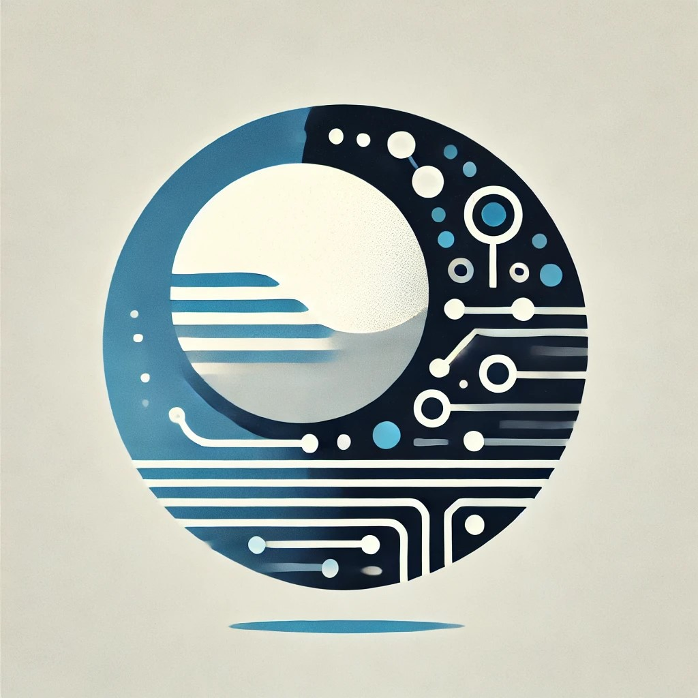

<div
  [class.m2app-dark]="darkMode"
  class="application-shell-container"
  [class.is-mobile]="mobileQuery.matches"
>
  <!-- HEADER -->
  <mat-toolbar color="primary" class="toolbar">
    <mat-toolbar-row>
      <a mat-button (click)="snav.toggle()" (keydown.enter)="snav.toggle()">
        <mat-icon class="hamburger-menu">menu</mat-icon>
      </a>
      <span class="spacer"></span>
      <!-- welcome/profile if user is logged in -->
      <a *ngIf="authService.isLoggedIn | async as isLoggedIn" mat-button (click)="onProfile()" (keydown.enter)="onProfile()">
        {{'PROFILE.HEADER_PROFILE' | translate}}
      </a>
      <!-- logout if user is logged in -->
      <a *ngIf="authService.isLoggedIn | async as isLoggedIn" mat-button (click)="onLogout()" (keydown.enter)="onLogout()">
        {{'LOGIN.LOGOUT' | translate}}
      </a>
      <!-- icons for changing the theme to dark mode, translation of the page-->
      <mat-icon *ngIf="darkMode" (click)="onModeChange()" (keyup.enter)="onModeChange()" class="icon" tabindex="0">nights_stay</mat-icon>
      <mat-icon *ngIf="!darkMode" (click)="onModeChange()" (keyup.enter)="onModeChange()" class="icon" tabindex="0">wb_sunny</mat-icon>
      <mat-icon (click)="openDialog()" (keydown.enter)="openDialog()" class="icon" tabindex="0">translate</mat-icon>
    </mat-toolbar-row>
  </mat-toolbar>

  <!-- SIDENAV -->
  <mat-sidenav-container
    [ngStyle]= "{'scrollbar-color': darkMode ? 'white rgb(70, 70, 70)' : 'white cornflowerblue'}"
    class="sidenav-container"
  >
    <mat-sidenav
      class="sidenav"
      #snav
      mode="over"
      [fixedInViewport]="mobileQuery.matches"
      (click)="snav.toggle()"
    >
      <div
        class="sidenav-header"
        [ngClass]="!darkMode ? 'light-mode-header' : 'dark-mode-header'"
      >
        
      </div>
      <div class="links-logos-container">
        <div class="sidenav-left">
          <div class="spacer-sidenav"></div>
          <mat-nav-list>
            <a mat-list-item routerLink=".">
              <span class="menu-item">
                {{'MENU.HOME' | translate}}
              </span>
            </a>
            <a mat-list-item routerLink="about">
              <span class="menu-item">
                {{'MENU.ABOUT' | translate}}
              </span>
            </a>
            <a mat-list-item routerLink="projects">
              <span class="menu-item">
                {{'MENU.PROJECTS' | translate}}
              </span>
            </a>
            <a mat-list-item href="../../assets/Resume.pdf">
              <span class="menu-item">
                {{'MENU.RESUME' | translate}}
              </span>
            </a>
          </mat-nav-list>
        </div>
        <div
          class="sidenav-right"
          [ngClass]="!darkMode ? 'sidenav-right-lightmode' : 'sidenav-right-darkmode'"
        >
          <a class="icon-link" href="https://www.linkedin.com/in/joseph-nechleba-594ba9103" aria-label="linkedin">
            <fa-icon class="side-logos-mobile" [icon]="faLinkedinIn"></fa-icon>
          </a>
          <a class="icon-link" href="https://github.com/jnech1997" aria-label="github">
            <fa-icon class="side-logos-mobile" [icon]="faGithubAlt"></fa-icon>
          </a>
          <a class="icon-link" href="https://earth.google.com/web/@35.83920948,-77.42830371,-543.98326699a,5049126.93757474d,35y,-0h,0t,0r" aria-label="location">
            <fa-icon class="side-logos-mobile" [icon]="faGlobe"></fa-icon>
          </a>
          <a class="icon-link" href="https://www.youtube.com/watch?v=dQw4w9WgXcQ" aria-label="youtube">
            <fa-icon class="side-logos-mobile" [icon]="faYoutube"></fa-icon>
          </a>
        </div>
      </div>
      <!-- FOOTER -->
      <div
        class="footer"
        [ngClass]="!darkMode ? 'footer-lightmode' : 'footer-darkmode'"
      >
        <p class="footer-text">&#169; 2025</p>
      </div>
    </mat-sidenav>

    <!-- CONTENT OUTLET -->
    <mat-sidenav-content class="sidenav-content">
      <router-outlet></router-outlet>
    </mat-sidenav-content>
  </mat-sidenav-container>
</div>
